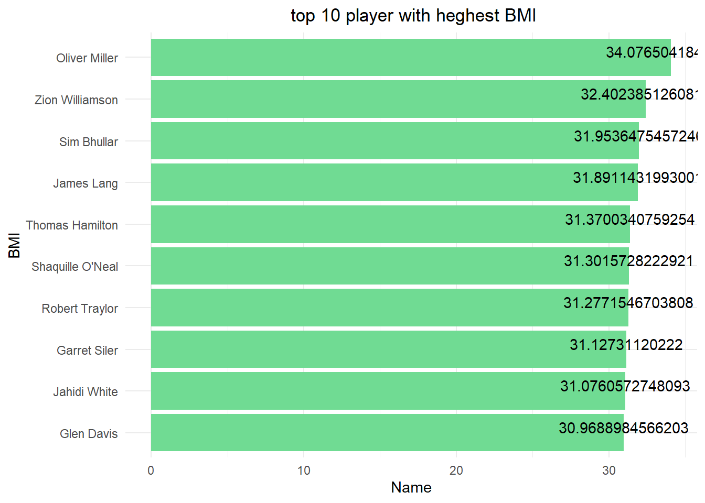

library(tidyverse)
library(readxl)
library(ggplot2)
library(lubridate)
knitr::opts_chunk$set(echo = TRUE, warning=FALSE, message=FALSE)Final Project PoChun Yang
final_Project_assignment_1
final_project_data_description
Po Chun Yang Final Project
1. Abstraction
Analyzing the performance data of NBA players is an interesting and important task for basketball enthusiasts and professionals alike. In this analysis, we focused on several factors that could potentially influence player performance, including physical characteristics, education, age, drafted status, and drafted round.
Firstly, we explored the relationship between physical characteristics, such as height, and performance indicators such as rebound and assist. The visualization results showed a strong correlation between height and rebound, but a weaker correlation with assist.
Next, we examined the relationship between age and scoring ability, which showed a downward trend as players get older. This suggests that younger players tend to perform better than older players in terms of scoring.
In addition, we analyzed the drafted status and drafted round of players. The results indicated that drafted players tend to have better scoring and rebound abilities compared to non-drafted players. Moreover, the first-round draft picks have a higher median score than the later rounds.
Lastly, we looked at the education of NBA players and how it relates to their performance. The visualization results showed that college and high school players have similar scoring abilities, but high school players tend to have slightly higher rebound abilities.
Overall, this analysis provides valuable insights into the factors that may affect the performance of NBA players. These findings can be useful for coaches, scouts, and fans alike in evaluating and predicting player performance.
2. Introduction
I have been a devoted follower of basketball for as long as I can remember, and I have always been eager to merge my love for the sport with my interest in data analysis. To achieve this, I used the NBA Stats API to collect a dataset that I believe will be just as captivating for you to work with as it has been for me.
- What factors determine players’ performance(point, rebound, assist, net_rating)?
physical characteristics
I started by analyzing the performance data of NBA players in relation to their physical characteristics, such as their height. It’s intriguing to see how their height correlates with their rebounding ability, assist rate, and other performance metrics. Additionally, I also examined whether age has an impact on players’ performance.
education and background
I carried out an analysis to compare the performance of drafted and non-drafted players. Subsequently, I proceeded to analyze the performance of players drafted in different rounds. Upon examining the data, it was noteworthy that the final round of the draft is the third round.
Additionally, I conducted an analysis of the correlation between education and the performance of NBA players. It was fascinating to discover whether there is a difference in performance between players who played in the NCAA and those who played in high school.
- After the above analysis and visualization, I analyze some of Trivia facts of personal interests.
Analysis of several my favorite players
To begin with, I am interested in exploring the careers of my favorite players and analyzing their data. I am not particularly interested in following new star players, so I will analyze the data for their careers. My aim is to gain a deeper understanding of their performances through this report.
Analysis of Height and Weight of NBA Players
Additionally, I want to use the data to analyze the body mass index (BMI) of players. I am interested in exploring whether players who have a high weight are more prone to injuries than players who have a lower BMI. However, this data does not provide injure data. Thus, I would analysis of players with high BMI and investigate how often they are injured.
3. Describe the data set(s)
The dataset that I have compiled using the NBA Stats API includes information on all players who have been a part of an NBA team’s roster for the past twenty years. It encompasses various demographic variables such as age, height, weight, and place of birth, along with biographical details like the team they played for, draft year, and round. Furthermore, the dataset contains fundamental box score statistics, such as the number of games played, average points, rebounds, assists, and other relevant information.
- read the dataset;
df <- read_csv("Po-chunYang_FinalProjectData/all_seasons.csv")The 23 column show players’ name, team abbreviation, age, height, weight, college, country, draft round, draft number, games played, points, rebound, assist, net rating, Offensive Rebounds, Defensive Rebounds, Usage Percentage, True Shooting Percentage, Assists Percentage, and season. In addition, there are 12305 rows of data. Those rows shows all the players’ data every season.
dim(df)[1] 12305 22length(unique((df)))[1] 22head(df)colnames(df) [1] "...1" "player_name" "team_abbreviation"
[4] "age" "player_height" "player_weight"
[7] "college" "country" "draft_year"
[10] "draft_round" "draft_number" "gp"
[13] "pts" "reb" "ast"
[16] "net_rating" "oreb_pct" "dreb_pct"
[19] "usg_pct" "ts_pct" "ast_pct"
[22] "season" df%>%
select(player_name)%>%
n_distinct(.)[1] 2463There are a lot of NBA players who play for several years so they have many rows of data and I try to merge all of them. After we tidy the data, I got the 2463 rows of data. Moreover, the summary shows 2463 players’ average height, weight, point, rebound, and assist. In addition, I tidy players’ data of their all careers with point, rebound, assist, and net ratings. Additionally, I integrate the players’ average points, average assists, and average rebounds.
summarise(df,height = mean(player_height), weight = mean(player_weight),
point = mean(pts), rebound = mean(reb), assist = mean(ast))dp<-mutate(df,point= pts*gp, assist = ast*gp, rebound = reb*gp)
performance<-dp%>%
group_by(player_name)%>%
summarise(height=mean(player_height),game_play=sum(gp),total_point = sum(point),
total_rebound=sum(rebound), total_assist = sum(assist),
net_rating = mean(net_rating))%>%
mutate(average_point = total_point/game_play,
average_rebound = total_rebound/game_play,
average_assist = total_assist/game_play)In the storytelling component, you should describe the basic information of the dataset(s) and the variables in a way that corresponds to your descriptive and summary statistics in the above coding component. DO NOT simply report the number of rows. Instead, describe the dataset(s) fully by specifying what each row and column mean. In other words, your description should be comprehensive and detailed enough for readers to picture or envision the dataset(s) in their brains.
4. The Tentative Plan for Visualization
- Height and rebound relative analysis I am curious to investigate whether height has an impact on a player’s rebound skills. I want to determine if there is evidence to support this theory or not. In addition, I would like to conduct an analysis to determine whether a basketball player’s height has a significant influence on their points and assists data.
As we all know, the center position in basketball is the key player responsible for the team’s rebounding. Since players in this position are usually taller than others, I have decided to analyze the correlation between height and rebounding ability using the dataset. Based on the scatterplot diagram below, it is evident that taller players tend to have better rebounding skills. However, interestingly, there seems to be a slight decline in the rebounding performance of players between 220cm to 225cm, which could be attributed to mobility issues caused by being excessively tall.
Height_rebound<-performance%>%
select(player_name,height,average_rebound)
ggplot(data=Height_rebound, aes(x=height, y=average_rebound)) +
geom_point()+
xlab("height(cm)")+
ylab("rebound")+
labs(title="height and rebound correlation")+
theme_minimal()+
theme(plot.title = element_text(hjust = 0.5))+
stat_smooth()From the visualization, it appears that a basketball player’s height has little correlation with their scoring ability. In fact, the visualization shows that shorter players tend to have better scoring ability. It is cool to know about that.
height_points<-performance%>%
select(player_name,height,average_point)
ggplot(data=height_points, aes(x=height, y=average_point)) +
geom_point()+
xlab("height(cm)")+
ylab("point")+
labs(title="height and point correlation")+
theme_minimal()+
theme(plot.title = element_text(hjust = 0.5))+
stat_smooth()Based on the visualization, it appears that a basketball player’s height may have a significant impact on their assist ability. Taller players do not seem to have as strong of an assist ability as their shorter counterparts. In fact, the visualization shows that shorter players tend to have significantly higher assist numbers. This is exemplified by the fact that many point guards, who are responsible for organizing the team’s offense, are typically shorter in height. Therefore, they have higher assist numbers.
height_assist<-performance%>%
select(player_name,height,average_assist)
ggplot(data=height_assist, aes(x=height, y=average_assist)) +
geom_point()+
xlab("height(cm)")+
ylab("assist")+
labs(title="height and assist correlation")+
theme_minimal()+
theme(plot.title = element_text(hjust = 0.5))+
stat_smooth()Based on the visualization, it shows that a basketball player’s height has little correlation with their net rating. Net rating primarily reflects a player’s performance on both the offensive and defensive ends of the court. As different positions require different roles, players of varying heights can excel as long as they fulfill their primary responsibilities. For instance, taller players may be responsible for rebounding, while shorter players may contribute more to ball handling and shooting.
height_rating<-performance%>%
select(player_name,height,net_rating)
ggplot(data=height_rating, aes(x=height, y=net_rating)) +
geom_point()+
xlab("height(cm)")+
ylab("net_rating")+
labs(title="height and net_rating correlation")+
theme_minimal()+
theme(plot.title = element_text(hjust = 0.5))+
stat_smooth()- Analysis players age with their net rating I want to explore the impact of age on player performance. I would like to investigate whether age has a significant effect on the performance of players or not.
After analyzing the relationship between age and net_rating, it is evident from the chart that there is not a significant correlation between the two variables. It is possible that individual players assess their physical fitness and performance data each season and make the decision to retire if they feel it is necessary. As a result, net_rating may not necessarily decrease significantly due to age alone.
age_performance<- dp%>%
filter(net_rating<20)%>%
filter(net_rating>-20)%>%
select(age, net_rating)
boxplot(net_rating~age, data = age_performance, xlab = "age",
ylab = "Net_rating", main = "performance")Based on the visualization, it appears that age may have an impact on a basketball player’s rebounding ability. The data shows that there is not a significant difference in rebound statistics between players aged 25 and 35. However, there is a noticeable decline in rebounding ability in the 35 to 43 age group.
age_rebound<- dp%>%
select(player_name,age,reb)
ggplot(data=age_rebound, aes(x=age, y=reb)) +
geom_point()+
xlab("age")+
ylab("rebound")+
labs(title="age and rebound correlation")+
theme_minimal()+
theme(plot.title = element_text(hjust = 0.5))+
stat_smooth()From the visualization, it shows that age may have a significant impact on a basketball player’s scoring ability. The data shows that players between the ages of 20 to 28 exhibit a gradual increase in their scoring statistics. However, there is a notable decline in scoring ability between the ages of 29 to 43. Therefore, we can conclude that scoring ability is closely linked to a player’s age.
age_assist<- dp%>%
select(player_name,age,pts)
ggplot(data=age_assist, aes(x=age, y=pts)) +
geom_point()+
xlab("age")+
ylab("points")+
labs(title="age and points correlation")+
theme_minimal()+
theme(plot.title = element_text(hjust = 0.5))+
stat_smooth()I analyzed age and assist ability. From the visualization, it can clearly seen the assist data from 25 to 36 years old is smooth without any fluctuations. However, there is a significant decline in assists between ages 37 and 43.
age_assist<- dp%>%
select(player_name,age,ast)
ggplot(data=age_assist, aes(x=age, y=ast)) +
geom_point()+
xlab("age")+
ylab("assist")+
labs(title="age and assist correlation")+
theme_minimal()+
theme(plot.title = element_text(hjust = 0.5))+
stat_smooth()In conclusion, I think age is closely related to scoring ability, and the rest of the other data do not have much downward trend, because most players retire before the age of 35.
-The NBA draft is an annual NBA event. In the draft, all 30 NBA teams can select players who want to join the NBA. These players are usually from the American college level, but in recent years, international players have been selected and high school graduates are increasing. Therefore, I conduct data analysis to understand the data comparison of draft and non-draft players.
The visualization clearly shows a correlation between a basketball player’s draft status and their scoring ability. It is evident that drafted players tend to have better scoring ability than non-drafted players.
dp$draft <- ifelse(dp$draft_year == "Undrafted", "Undrafted", "drafted")
draft_data<-dp%>%
filter(draft=="drafted")%>%
group_by(player_name)%>%
summarise(total_rebound = sum(rebound),game_play=sum(gp),total_point = sum(point),
total_rebound=sum(rebound), total_assist = sum(assist),
net_rating = mean(net_rating))%>%
mutate(average_point = total_point/game_play,
average_rebound = total_rebound/game_play,
average_assist = total_assist/game_play, draft="drafted")
Undraft_data<-dp%>%
filter(draft=="Undrafted")%>%
group_by(player_name)%>%
summarise(total_rebound = sum(rebound),game_play=sum(gp),total_point = sum(point),
total_rebound=sum(rebound), total_assist = sum(assist),
net_rating = mean(net_rating))%>%
mutate(average_point = total_point/game_play,
average_rebound = total_rebound/game_play,
average_assist = total_assist/game_play,draft="Undrafted")
drafted_data<-full_join(draft_data,Undraft_data)
ggplot(drafted_data, aes(x=draft, y = average_point)) +
geom_boxplot(outlier.shape = NA,aes(colour = draft))+
xlab("drafted")+
ylab("points")+
labs(title="drafted and points correlation")+
theme(plot.title = element_text(hjust = 0.5))+
ylim(-1,20)Additionally, the visualization also indicates a correlation between a basketball player’s draft status and their rebounding ability. It is apparent that most drafted players have a higher rebounding ability compared to non-drafted players.
ggplot(drafted_data, aes(x=draft, y = average_rebound)) +
geom_boxplot(outlier.shape = NA,aes(colour = draft))+
xlab("drafted")+
ylab("rebound")+
labs(title="drafted and rebound correlation")+
theme(plot.title = element_text(hjust = 0.5))+
ylim(-1,10)Furthermore, the visualization reveals that there is not a significant gap in the median score between drafted and non-drafted players. The median score for drafted players is only around 0.5 higher than non-drafted players, which is interesting to note.
ggplot(drafted_data, aes(x=draft, y = average_assist)) +
geom_boxplot(outlier.shape = NA,aes(colour = draft))+
xlab("drafted")+
ylab("assist")+
labs(title="drafted and assist correlation")+
theme(plot.title = element_text(hjust = 0.5))+
ylim(-1,5)The visualization shows the correlation between drafted and net_rating. Besides that, I could know the net rating does not have a lot of difference between drafted players and non-drafted players. In addition, undrafted players’ upper whisker and lower whisker have a lot of gaps than drafted players. Thus, we could analyze most drafted players as more steady than undrafted players.
ggplot(drafted_data, aes(x=draft, y = net_rating)) +
geom_boxplot(outlier.shape = NA,aes(colour = draft))+
xlab("drafted")+
ylab("net_rating")+
labs(title="drafted and net_rating correlation")+
theme(plot.title = element_text(hjust = 0.5))+
ylim(-30,30)In conclusion, I could know most of the draft players have better performance than undraft players from those visualizations.
Next, I would like to analyze the draft picks of basketball players and explore whether there is a significant difference in performance between players drafted in the first round versus those in the second and third rounds. Specifically, I am curious to determine if players drafted in the later rounds tend to perform worse than those drafted in the first round.
The visualization shows a correlation between a basketball player’s draft status and their scoring ability. It is evident that players drafted in the first round tend to have the highest median point values. Additionally, the lower quartile data for first-round players is also higher compared to players drafted in later rounds. However, the median point values for players drafted in later rounds are relatively similar.
round1_data<-dp%>%
filter(draft_round=="1")%>%
group_by(player_name)%>%
summarise(total_rebound = sum(rebound),game_play=sum(gp),total_point = sum(point),
total_rebound=sum(rebound), total_assist = sum(assist),
net_rating = mean(net_rating))%>%
mutate(average_point = total_point/game_play,
average_rebound = total_rebound/game_play,
average_assist = total_assist/game_play, draft_round="1")
round2_data<-dp%>%
filter(draft_round=="2")%>%
group_by(player_name)%>%
summarise(total_rebound = sum(rebound),game_play=sum(gp),total_point = sum(point),
total_rebound=sum(rebound), total_assist = sum(assist),
net_rating = mean(net_rating))%>%
mutate(average_point = total_point/game_play,
average_rebound = total_rebound/game_play,
average_assist = total_assist/game_play,draft_round="2")
round3_data<-dp%>%
filter(draft_round=="3")%>%
group_by(player_name)%>%
summarise(total_rebound = sum(rebound),game_play=sum(gp),total_point = sum(point),
total_rebound=sum(rebound), total_assist = sum(assist),
net_rating = mean(net_rating))%>%
mutate(average_point = total_point/game_play,
average_rebound = total_rebound/game_play,
average_assist = total_assist/game_play,draft_round="3")
roundNone_data<-dp%>%
filter(draft_round=="Undrafted")%>%
group_by(player_name)%>%
summarise(total_rebound = sum(rebound),game_play=sum(gp),total_point = sum(point),
total_rebound=sum(rebound), total_assist = sum(assist),
net_rating = mean(net_rating))%>%
mutate(average_point = total_point/game_play,
average_rebound = total_rebound/game_play,
average_assist = total_assist/game_play,draft_round="Undrafted")
round_data<-full_join(round1_data,round2_data)
round_data<-full_join(round_data,round3_data)
round_data<-full_join(round_data,roundNone_data)
ggplot(round_data, aes(x=draft_round, y = average_point)) +
geom_boxplot(outlier.shape = NA,aes(colour = draft_round))+
xlab("round")+
ylab("point")+
labs(title="drafted round and point correlation")+
theme(plot.title = element_text(hjust = 0.5))+
ylim(-1,30)From the visualization, it can be seen that the first-round picks have the best rebound ability. Not only the median but also the lower quartile data is higher than in other rounds of the draft. Furthermore, other-round picks do not have too much difference between their rebound data.
ggplot(round_data, aes(x=draft_round, y = average_rebound)) +
geom_boxplot(outlier.shape = NA,aes(colour = draft_round))+
xlab("round")+
ylab("rebound")+
labs(title="drafted round and rebound correlation")+
theme(plot.title = element_text(hjust = 0.5))+
ylim(-1,10)The visualization displays a correlation between a basketball player’s draft round and their assist ability. It is interesting to note that players selected in the first round generally have a slightly higher median assist value than players drafted in later rounds. Furthermore, the median assist value for players selected in the third round is higher than the median for players drafted in the second round.
ggplot(round_data, aes(x=draft_round, y = average_assist)) +
geom_boxplot(outlier.shape = NA,aes(colour = draft_round))+
xlab("round")+
ylab("assist")+
labs(title="drafted round and assist correlation")+
theme(plot.title = element_text(hjust = 0.5))+
ylim(-1,6)From the visualization, it could see that third-round players have the best net rating. Besides that, the lower quartile also appears the best here. In addition, the undrafted players show the same median net rating as the second-round players. The first-round of players’ net rating is second only to the third-round players.
ggplot(round_data, aes(x=draft_round, y = net_rating)) +
geom_boxplot(outlier.shape = NA,aes(colour = draft_round))+
xlab("round")+
ylab("net_rating")+
labs(title="drafted round and net_rating correlation")+
theme(plot.title = element_text(hjust = 0.5))+
ylim(-30,30)I conducted an analysis of NBA players and their educational backgrounds, with a focus on whether players trained by the NCAA are better than those who joined the NBA straight out of high school. This analysis is particularly intriguing, as it sheds light on the impact of NCAA and high school leagues on a player’s performance in the NBA.
Based on the visualization, it appears that there is no significant difference in scoring ability between college players and high school players who joined the NBA. The median point values of both groups are similar, and there is little difference between the upper and lower quartile data. Therefore, it seems that the player’s educational background does not have a significant impact on their scoring ability.
dp$university <- ifelse(dp$college == "None", "high_school", "college")
college_data <- dp%>%
filter(university=="college")%>%
group_by(player_name)%>%
summarise(total_rebound = sum(rebound),game_play=sum(gp),total_point = sum(point),
total_rebound=sum(rebound), total_assist = sum(assist),
net_rating = mean(net_rating))%>%
mutate(average_point = total_point/game_play,
average_rebound = total_rebound/game_play,
average_assist = total_assist/game_play,university="college")
highschool_data <- dp%>%
filter(university=="high_school")%>%
group_by(player_name)%>%
summarise(total_rebound = sum(rebound),game_play=sum(gp),total_point = sum(point),
total_rebound=sum(rebound), total_assist = sum(assist),
net_rating = mean(net_rating))%>%
mutate(average_point = total_point/game_play,
average_rebound = total_rebound/game_play,
average_assist = total_assist/game_play,university="high_school")
education_data<-full_join(college_data,highschool_data)
ggplot(education_data, aes(x=university, y = average_point)) +
geom_boxplot(outlier.shape = NA,aes(colour = university))+
xlab("education")+
ylab("point")+
labs(title="education and point correlation")+
theme(plot.title = element_text(hjust = 0.5))+
ylim(-1,30)The visualization that represents the correlation between education and rebounding ability indicates that NBA players who entered the league directly from high school have a slightly better rebounding ability compared to those who played in college.
ggplot(education_data, aes(x=university, y = average_rebound)) +
geom_boxplot(outlier.shape = NA,aes(colour = university))+
xlab("education")+
ylab("rebound")+
labs(title="education and rebound correlation")+
theme(plot.title = element_text(hjust = 0.5))+
ylim(-1,10)In my analysis of the relationship between education and assist ability among NBA players, the visualization indicates that the median values for both NCAA and high school players are similar. However, the upper quartile values for NCAA players are slightly higher than those of high school players in the NBA.
ggplot(education_data, aes(x=university, y = average_assist)) +
geom_boxplot(outlier.shape = NA,aes(colour = university))+
xlab("education")+
ylab("assist")+
labs(title="education and assist correlation")+
theme(plot.title = element_text(hjust = 0.5))+
ylim(-1,6)The visualization of the net rating between NCAA players and high school players attending the NBA presents an interesting finding. It is evident from the visualization that NCAA players’ median have the as same net rating as high school players’ median. However, the upper quartile of high school players is marginally greater than that of college players.
ggplot(education_data, aes(x=university, y = net_rating)) +
geom_boxplot(outlier.shape = NA,aes(colour = university))+
xlab("education")+
ylab("net_rating")+
labs(title="education and net_rating correlation")+
theme(plot.title = element_text(hjust = 0.5))+
ylim(-30,30)5. Analyzing some of Trivia facts of personal interests
- Analysis of several my favorite players I am interested in exploring the careers of my favorite players and analyzing their data. I am not particularly interested in following new star players, so I will analyze the data for their careers. My aim is to gain a deeper understanding of their performances through this report.
The below Visualization shows six of my favorite players. This image shows the change in scoring over their careers. Compared with their rookie year, we can see that every player’s scoring ability has greatly improved compared with their rookie year. In addition,the line chart shows LeBron James’ scoring ability hasn’t regressed as he gets older.
Kobe<-df[df$player_name=='Kobe Bryant',]
Durant<-df[df$player_name=='Kevin Durant',]
Curry<-df[df$player_name=='Stephen Curry',]
Thompson<-df[df$player_name=='Klay Thompson',]
Tatum<-df[df$player_name=='Jayson Tatum',]
LeBron<-df[df$player_name=='LeBron James',]
favorite_player<-rbind(Kobe, Durant, Curry, Thompson, Tatum, LeBron)
favorite_player<- subset(favorite_player, select = -...1)
player_point<- select(favorite_player, player_name, age, pts)
#age <- rep(18:37, times = 5)
#type <- rep(c('Kobe','Durant','Curry','Thompson','Tatum'),each = 26)
ggplot(player_point, aes(x = age, y = pts, colour = player_name)) +
geom_line() +
geom_point() In the Visualization shows that my favorite players’ assist ability. I could know that Lebron James’ assist ability does not regressed as he gets older.
favorite_player<-rbind(Kobe, Durant, Curry, Thompson, Tatum, LeBron)
favorite_player<- subset(favorite_player, select = -...1)
player_assist<- select(favorite_player, player_name, age, ast)
ggplot(player_assist, aes(x = age, y = ast, colour = player_name)) +
geom_line() +
geom_point() The visualization shows my favorite players’ rebound ability. I could know that most of my favorite player who plays for the Guard does not have excellent rebound ability. (why?) Besides that, Lebron James and Kevin Durant play for the Forward position which shows that their rebound ability is greater than those Guard.
favorite_player<-rbind(Kobe, Durant, Curry, Thompson, Tatum, LeBron)
favorite_player<- subset(favorite_player, select = -...1)
player_rebound<- select(favorite_player, player_name, age, reb)
ggplot(player_rebound, aes(x = age, y = reb, colour = player_name)) +
geom_line() +
geom_point() favorite_player<-rbind(Kobe, Durant, Curry, Thompson, Tatum, LeBron)
favorite_player<- subset(favorite_player, select = -...1)
player_performance<- select(favorite_player, player_name, age, net_rating)
ggplot(player_performance, aes(x = age, y = net_rating, colour = player_name)) +
geom_line() +
geom_point() - Analysis of Height and Weight of NBA Players Additionally, I want to use the data to analyze the body mass index (BMI) of players. I am interested in exploring whether players who have a high weight are more prone to injuries than players who have a lower BMI. However, this data does not provide injure data. Thus, I would analysis of player with high BMI and investigate how often they are injured. BMI formula = weight(kg)/(height(m))^2
Based on the analysis of the data in the image provided, it can be observed that there is a correlation between weight and height for the group of individuals represented by the data. Specifically, it appears that taller people tend to have higher weights.
It is interesting to know that the image there are three players who height is lower than 170 cm. Besides that, there are one person whose height is over 230cm. As we could know that the tallest player is call Gheorghe Muresan. Moreover, the lowest player is Muggsy Bogues with 160cm height.
BMI<-df%>%
group_by(player_name) %>%
summarise_at(vars(player_height, player_weight), list(mean))
BMI<-BMI%>%
mutate(BMI = player_weight/player_height/player_height*100*100)
filter(BMI,rank(desc(player_height))<=1)filter(BMI,player_height<165)ggplot(BMI, aes(x = player_weight, y = player_height))+
geom_point()+
scale_x_continuous(breaks = seq(60 , 150, by = 20))+
scale_y_continuous(breaks = seq(150 , 230, by = 10))+
xlab("Weight(kg)")+
ylab("Height(cm)")+
labs(title="weight and height correlation")+
theme_minimal()+
theme(plot.title = element_text(hjust = 0.5))+
geom_smooth(method = "lm", formula = y~x)This image displays the top 10 NBA players with the highest BMI over the last three decades. BMI, or body mass index, is a measure of body fat based on a person’s weight and height. The image is highlighting the players with the highest BMI values among NBA players during the specified time period.
Zion Williamson’s athleticism is remarkable, particularly when it comes to his jumping and dunking abilities. At 129 kg and a height of only 199 cm, he currently holds the highest Body Mass Index (BMI) of any player in the league, at 32.4. However, despite his high BMI, Williamson’s physical abilities on the court are nothing short of extraordinary. However, I thought Zion is easy to injure because of his high BMI.
top10_BMI <- BMI%>%
filter(rank(desc(BMI))<=10)
ggplot(top10_BMI, aes(x =reorder(player_name, BMI),y=BMI))+
geom_bar(stat = "identity",fill="#70DB93")+
coord_flip()+
xlab("BMI")+
ylab("Name")+
labs(title=" top 10 player with heghest BMI")+
theme_minimal()+
theme(plot.title = element_text(hjust = 0.5))+
geom_text(aes(label = BMI), vjust = 0 )
6. Conclusion
In conclusion, the analysis of NBA players’ performance data reveals some interesting insights. The correlation between physical characteristics such as height and performance factors such as rebounding and assisting provides valuable information for coaches and teams. The analysis also shows that age does not have a significant impact on performance, which may be surprising to some. Additionally, the comparison of drafted and non-drafted players’ performance indicates that drafted players generally perform better than non-drafted players, and the third round appears to be the least impactful round for drafting players. Finally, the analysis of education and performance suggests that players who played in the NCAA perform slightly worse than those who entered the league directly from high school. These findings can be useful for teams and players in developing strategies to improve their performance and maximize their potential in the NBA.